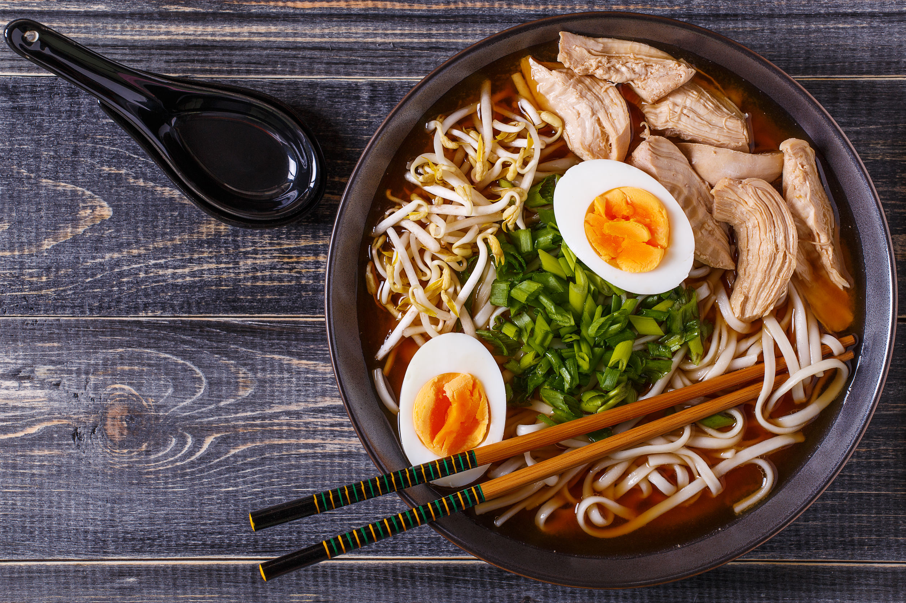

¿Qué es Tsubomi?
¿De dónde viene?
Nos caracterizamos por...
Tsubomi es un restaurante creado por auténticos amantes de Japón, su cultura y todo aquello que les rodea los cuales han estudiado muy duro para poder formar este lugar en los que los cocineros son auténticos profesionales japoneses conocedores de toda la cultura culinaria de este país que se encargarán de transportarte en cada bocada al país del sol naciente.
Tsubomi proviene de una larga estirpe de profesionales en el arte del corte de pescado japonés así como de diferentes platos típicos de la cultura de este país caracterizado por una larga tradición de diferentes emplatados y delicadeza en cada una de sus elaboraciones
A diferencia de otros lugares de similares características, en Tsubomi podrás comer justo aquello que siempre has querido poder probar. Nuestros menús se renuevan constantemente con las peticiones de nuestros clientes aunque también contamos con nuestros platos estrella fijos por lo que siempre tendrás algo que poder probar o comer. No lo dudes y ven a visitarnos, ¡te esperamos!